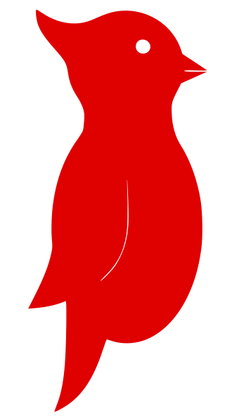

-
I am
Liam Niehus-Staab
-
I'm a Software Engineer.
Officially, I write code and make quality products that fill a need for a client.
Really, thats just a complicated way to say I help people do what they care about, because I care about making people happy. -
Portfolio
-

GrammieGram Android Native App
Head of Android Development, Since Fall 2018
Grinnell, Iowa
Building on GrammieGram's mission of designing communication technology with ease of use at its core, I was put in charge of leading a brand-new team of 3 Android mobile developers. Our goal: designing and implementing every aspect of Android mobile version of the GrammieGram web app with the assistance of GrammieGram's public RESTful API.
-
GrammieGram Web App
Co-Founder and Full Stack Developer, Summer 2018
Grinnell, Iowa
I co-founded GrammieGram LLC in the spring of 2018 with 4 close friends. We founded GrammieGram with the goal of solving a problem for our CEO's grandmother; communication technology was too complicated. With our quest in hand, we set out to develop a communication platform optimized for the elderly, and designed to be as simple to use as possible. That summer, I worked at GrammieGram as a Full Stack developer, building the GrammieGram web app using Python and Django on the backend and JavaScript and Bootstrap on the frontend. Working remotely with a small team of people I trust and aiming to improve the lives of real people, I began to get a glimpse of what working as a software engineer really means.
-
MapTextSynthesizer
Research Assistant, Summer 2018
Grinnell, Iowa
With a partner, I developed a program that can train a Convolutional Neural Network to read text in scanned images of historical maps. Our mentor is researching a tool that can make text in historical maps searchable by being able to pick out and recognise the words in the map. However, due to a dearth of real training data, my partner and I were tasked with creating synthetic training data. Our project, MapTextSynthesizer, dynamically generates grey-scale, synthetic images containing text, which appear to be from historical maps. Training on MapTextSynthesizer generated data improved the accuracy of my mentor's CNN by 10% over results when trained on industry standard character recognition datasets.
-
Grinnell AppDev
Junior Android Developer, Since Spring 2018
Grinnell, Iowa
Working quality assurance for the Grinnell student directory app (lovingly known as DB) taught me the importance and complexity of testing that is required for large-scale, or even just medium-scale software products. I spent a lot of time between classes learning how to use Espresso and Mockito to create unit and implementation tests for Android. Additionally, I got to work on a large code-base from which I learned many tips and tricks that I use in my own Android projects.
-

HackUIowa
Compliance Accomplice, Fall 2018
Iowa City, Iowa
Built during the fall 2018 HackUIowa hackathon, Compliance Accomplice is an email system middleware for detecting and archiving potential SEC compliance issues in a self-hosted email server using Natural Language Processing. Participating in a hackathon really allowed me to get excited about a new project and see the breadth of software development applications; not everything is reversing linked lists, eh?
-
-
Résumé
Maybe you're recruiter, or maybe you just like reading résumés. Either way, my résumé is avalible for download by clicking the button below.
-
Stuff I do for Fun
-
Ultimate Frisbee
Ultimate Frisbee was introduced to me in middle school gym class as the weird sport that didn't make any sense because no one knew the rules. Despite first impressions, I continued playing Ultimate among friends and in the local frisbee league. I went on to co-found my high school's Ultimate Frisbee club and we went on to compete at a state level. Now, I'm the captain of the Ultimate Frisbee open team at Grinnell College where I teach and refine the skills of new and returning players in planned tri-weekly practices. My favorite part of Ultimate is being part of a team and enabling our success.

-
Grinnell Intersectional Vegans
After watching a documentary on the adverse effects of animal agriculture on the environment, I decided to go Vegan™. I joined the intersectional vegan club at Grinnell College and learned a lot more about how the actions of an individual can (and do) have an impact on the world, and the importance of self efficacy. Today, I co-lead the Grinnell Intersectional Vegans and help organize club meetings and events.

-
Powesheik Animal League Shelter (PALS)
I grew up with two cats, which undoubtedly kickstarted my love for animals and particularly cats. I've been volunteering at animal shelters since high school, so I knew that I had to go to a college where I could continue helping animals without homes. I can honestly say that PALS, the animal shelter near Grinnell College, played a part in my college decision and I have no regrets. I volunteer at PALS weekly, cleaning and socializing the amazing felines that live there. It is my bitter-sweet joy to get to know and care for cats at the shelter, and then see them adopted.
-
-
Connect with Me
Feel free to contact through either LinkedIn or Gmail. Or, if you want to see more projects I have worked on, check out my Github!